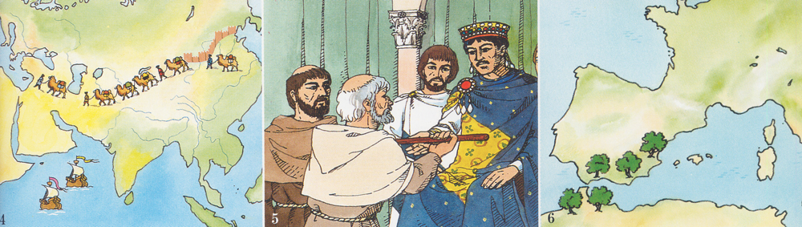
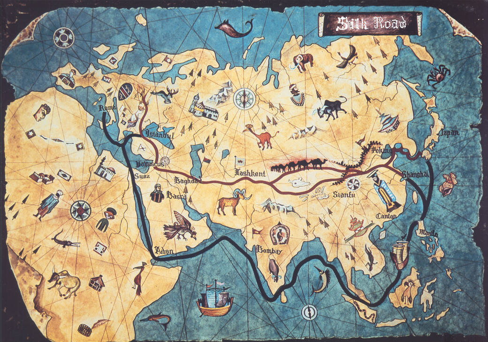
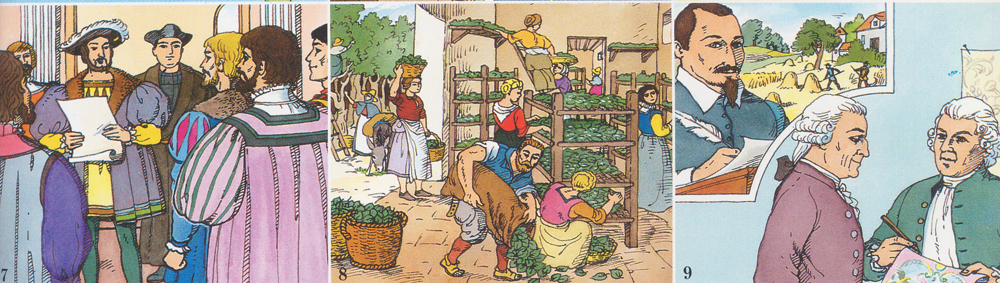
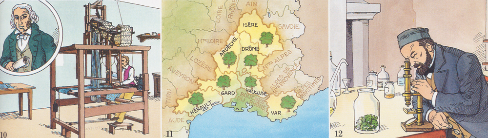
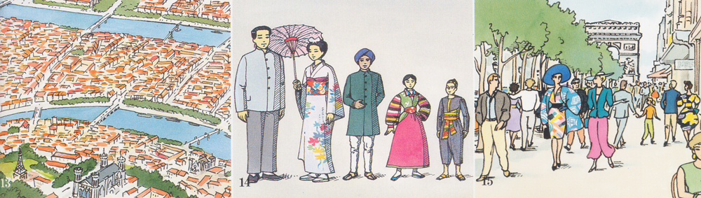

Historical evidence shows that silk was discovered in China and that the industry spread from there to other parts of the world. Mankind has always loved this shimmering fibre of unparalleled grandeur from the moment Chinese Empress Shiling Ti discovered it in her tea cup during 2640 BC. The earliest authentic reference to silk is to be found in the Chronicles of Chou-King (2200 BC), where silk figured prominently in public ceremonies as a symbol of homage to the emperors.
The silk industry originated in the province of Chan-Tong and the secret was jealously guarded by the Chinese for about 3000 years. When commercial relations were established between China and Persia, and later with other countries, the export of raw silk and silk goods assumed greater importance. Traders from ancient Persia (now Iran) used to bring richly coloured and fine textured silks from Chinese merchants through hazardous routes interspersed with dangerous mountainous terrains, difficult passes, dry deserts and thick forests. Though, commodities like amber, glass, spices and tea were also traded along with silk, which indeed rapidly became one of the principal elements of the Chinese economy and hence, the trade route got the name ‘SILK ROUTE’.
According to some sources, the first country after China to learn the secret was Korea, where Chinese immigrants started sericulture in about 1200 BC. The industry later spread to Japan. According to another version, what was instrumental in bringing the silk industry to Japan during the third century B.C. was when Semiramus, a General in the army of Empress Singu-Kongo, invaded and conquered Korea. Among his prisoners were some sericulturists whom he brought back to Japan. Under royal patronage the industry continued, through haltingly, till the Meiji Restoration in 1868. During the latter part of the 19th century, Japan gave serious attention to the development of the industry by introducing the use of modern machinery and improved techniques and carrying out intensive research in sericulture science. The industry is said to have spread to Tibet when a Chinese princess, carrying silkworm eggs and mulberry tree seeds in her headdress, married the king of Khotan in Tibet. From Tibet the industry spread slowly to India and Persia.
By the first century B.C. markets as far in southern Europe began to receive silk fabrics made in the East. According to Western historians, mulberry tree cultivation had spread to India through Tibet by about 140 B.C. and the cultivation of mulberry trees and the rearing of silkworms began in the areas flanking the Brahmaputra and Ganges rivers. According to some other Indian scholars, silkworms (Bombyx mori) were first domesticated in the foothills of the Himalayas. There is also evidence in ancient Sanskrit literature that certain kind of wild silks were cultivated in India from time immemorial. After the British arrival in India the silk industry had flourished and spread to many other areas like, Mysore, Jammu & Kashmir, etc. The Arabs were also familiar with silkworms and even in Pre-Islamic times studied the life history of the silkworm. It has been suggested on the basis of early legends that the Arabs obtained silkworm eggs and mulberry tree seed from India during the early part of the Christian era.
By the fourth century A.D., sericulture was well established in India and Central Asia. Raw silk and silken goods were exported from the East to Persia and then to Rome. The Persians held a monopoly on some of the silken goods most prized by Roman society but in the 6th century A.D. two monks from Rome, having learnt the art of sericulture in Tibet, introduced the industry into Constantinople in 553 A.D. The Romans were thus able to produce their own raw silk and this marked the beginning of silk production in Europe. For three or four centuries, the rearing of silkworms was confined to the eastern areas of the Roman Empire and factories were set up in Athens, Corinth, and the Aegean Islands for manufacture of silk fabrics. The industry moved gradulally from the east to the Venetian Republic and by the end of the ninth century and during the tenth and eleventh centuries the Venetians developed the industry to such an extent that they were able to meet almost the entire requirements of Europe.
From Italy, the industry spread to France where silkworm rearing was introduced in 1340 by French noblemen who brought in the silkworm eggs and the mulberry tree seeds. The industry was firmly established in France by the end of 17th century and prospered during the 18th century. In 19th century, when sericulture was at its peak in France, an epidemic called pebrine – a destructive disease of silkworms – broke out and wiped out sericulture not only in France but major part of Europe and the Middle East. Sir Louis Pasteur in 1870 discovered that pebrine could be controlled by the examination of mother moth that saved the industry from extinction. Although the industry revived to some extent in France, it was not a complete revival mainly because of socio-economic changes and industrialisation.